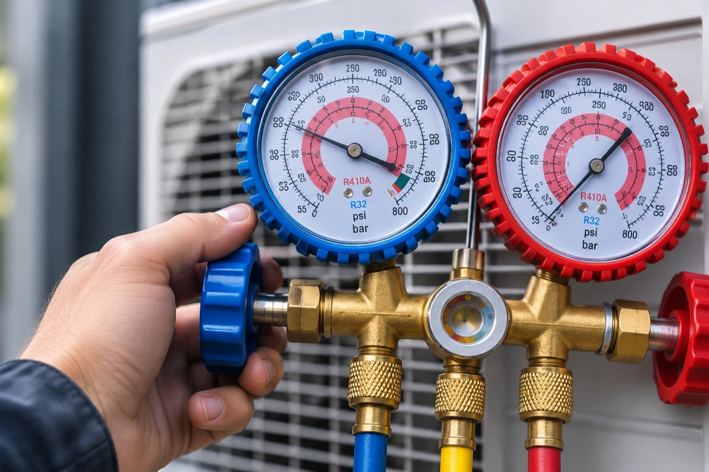

Climatisation et chauffage
Installation, réparation, entretien et diagnostic de systèmes muraux et centraux dans le Grand Montréal.
Services
Choisissez votre service

Installation
Systèmes muraux et centraux, de la soumission gratuite à la mise en service.

Réparation
Elle ne chauffe plus, ne climatise plus ou fait du bruit : nous réparons.

Entretien
Nettoyage et inspection pour préserver performance et durée de vie.

Diagnostic et dépannage
Identifier la cause d’un problème, avec réparation d’urgence disponible.
Pourquoi Thermolux
Un travail propre, une équipe courtoise

Licence RBQ 5812-9388-01Entrepreneur certifié par la Régie du bâtiment du Québec
15+ans d’expérience
3villes desservies
Techniciens certifiés
Installation et entretien par des professionnels licenciés.
Garantie fabricant et main-d’œuvre
Votre installation est protégée.
Service fiable et professionnel
Une équipe locale, de la soumission à l’entretien.
Aide pour la subvention LogisVert
Nous vous accompagnons dans les démarches.